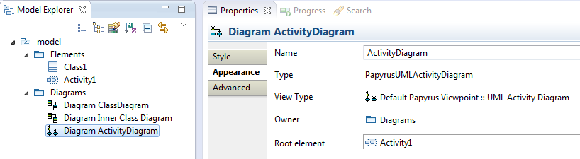
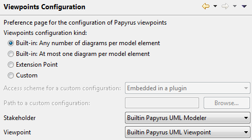
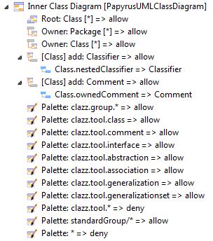

Viewpoints in Papyrus
Introduction
Viewpoints in Papyrus enables the specialization of the user experiences by constraining what can be seen and interacted with in models through views.
The most obvious ways to look at and interact with a model is through diagrams; and viewpoints enables the specification of constraints upon them as well as their specialization.
Papyrus also define additional views, including textual ones.
Impacts of Viewpoints in the Papyrus Interface
The enforcement of a particular viewpoint will have noticeable consequences on the user interface of Papyrus, i.e. what a user will be able to see and do.
Viewpoints also have impacts on the edition experience of the model themselves.
The definition a viewpoints specify which views and diagrams can be applied to specified model elements.
A consequence is that the Papyrus tool bar as well as the contextual menus are aware of the currently enforced viewpoint and only make available actions that are in conformance with the viewpoint.
For example, in the two captures hereafter the content of the same menu for the creation of a new diagram depends on the enforced viewpoint.
The toolbar elements for the creation of new diagrams are also adapted in the same way as the contextual menus to reflect the currently enforced viewpoint.
The elements that appeat in the contextual menus should also appear in the toolbar.
Diagram Properties
Papyrus views and diagrams have a set of properties related to the management of viewpoints.
They are visible in the Properties view of the diagrams.

In the image above the selected diagram have two properties related to the management of viewpoints:
- View Type: This property shows the diagram's type as defined in the viewpoints' configuration. In the example above, it is a UML Activity Diagram, part of the Default Papyrus Viewpoint configuration.
- Owner: This property shows the current owner of the diagram, i.e. the model element which the diagram is attached to. In the example above, the diagram is within the Diagrams package, meaning this package owns the diagram.
- Root element: This property shows the model element that is visualized through the diagram. In the example above, the top element visualized in the selected diagram is the UML activity named Activity1. It is possible to retarget a diagram, i.e. change its root element. The user will be prompted to select a model element that fits the constraints that apply for this type of diagram.
Changing the Applied Viewpoint
The Papyrus viewpoints can be configured in a preference panel accessible along the other Papyrus preferences under the name Viewpoints Configuration.
The panel looks like the following:

Configuration Kinds
The first preference element is the selection of the kind of configuration to apply to the user's environment.
In the above capture, the radio buttons are used to determine which kind of configuration to use.
Papyrus comes with two built-in configurations.
It is nevertheless possible to define new configurations and viewpoints, and select them in this position.
Built-in Configurations
The built-in configurations are provided for convenience and have the following properties:
- Any number of diagrams per model element is a configuration with a viewpoint that allow any kind of view and diagram and does not restrain the number of diagrams that can be created for each model element.
- At most one diagram per model element is a configuration with a viewpoint that allow any kind of view and diagram but limit the number of diagrams that can be created for each model element at one.
Extension Point-Defined Configuration
It is possible to deploy custom viewpoints configuration through an Eclipse plugin and its contribution to an extension point.
The identifier of the extension point to use is org.eclipse.papyrus.infra.viewpoints.policy.custom and is defined in the org.eclipse.papyrus.infra.viewpoints.policy plugin.
Each extension can contribute a viewpoints configuration and give it a priority (0 is lowest).
The setting of the contributed configuration is achieved by giving the path to the configuration file.
The path can be relative to the contributing plugin's root, or be an absolute URI in the form of platform:/plugin/<pluginID>/<path>.
If no contribution is made and this option is selected, the builtin configuration named Any number of diagrams per model element will be used as a fallback.
Custom Configuration
To select a custom configuration, choose the Custom option.
This will activate the corresponding preferences fields:
- Access scheme lets the user select how the custom configuration should be looked for. The possible options are:
- Absolute path means that the configuration will be looked for on the host's file system.
- Workspace file means that the configuration file will be looked for as a resource in the workspace.
- Embedded in a plugin means that the configuration file will be looked for as a resource in a loaded Eclipse plugin.
- Path lets the user select the configuration file based on the selected scheme:
- Using the scheme Absolute path the file is selected using a simple file selection dialog.
- Using the scheme Workspace file the file is selected using a workspace resource selection dialog.
- Using the scheme Embedded in a plugin the file is selected using a plugin content selection dialog.
Stakeholder and Viewpoint Selection
Once a configuration is selected, the use can select one of the viewpoint defined within it.
This is achieved through the two dropdown boxes:
- Stakeholder is used to select the user's archetype
- Viewpoint is used to select the viewpoint
Defining New Viewpoints
Papyrus supports the definition of new viewpoints that can subsequently used by selecting them in the Papyrus Viewpoints preferences panel.
A configuration file is simply an Ecore model that can be edited with the provided Viewpoints configuration editor in Papyrus.
Available Concepts
This subsection summarizes the different concepts that are leveraged for the definition of viewpoints in Papyrus.
It is important to note that these concepts rely on and extend the ISO 42010 standard for viewpoints.
- A configuration is a specification of a set of viewpoints and stakeholders. A configuration is typically stored in a .configuration file and has to be selected in the preference window (Window/Preferences/Papyrus/Viewpoints Configuration).
- The concept of stakeholder (see ISO 42010) in Papyrus represents a user archetype that pertains in the construction and/or review of a model. A stakeholder is associated to a set of viewpoints defining how he/she can see a model.
- The concept of viewpoint (see ISO 42010) in Papyrus represents a set of constrains about what can be seen in a model. A Papyrus viewpoint mainly defines what are the accessible diagrams and the particular constraints to be applied on each of them.
- A Papyrus diagram is a specialized view on a model in the form of a visual language. It is supported by an implementation artifact, i.e. the actual code that implements the diagram. Moreover, it can be constrained using rules.
- A model rule specifies if a model element can be represented through a diagram, i.e. whether it can be selected as the root element of a diagram.
- An owning rule specifies whether a model element is allowed to own a diagram.
- Child rules specify whether a given model element can be added to the model through a diagram.
- Palette rules specify the palette elements that are visible for a diagram.
Building a Configuration
The first step is to create the configuration file.
Papyrus comes with a wizard for this purpose:
- In the contextual menu of a project, or in the Eclipse File'' menu, select '''New, Other ....
- The wizard is called Viewpoints configuration and is located in the Papyrus category.
Configuration element
Once the configuration file is created, it should be automatically opened with the Papyrus viewpoints configuration editor.
The top element is the configuration.
It has two properties:
- Default Stakeholder, which should be used to select the default stakeholder for this configuration (once one has been created).
- Metamodel, which should be used to select the metamodel on which the viewpoint will apply. The property field proposes a list of the loaded metamodels identified by their URI. Usually, the UML metamodel (http://www.eclipse.org/uml2/4.0.0/UML/) should be used.
Stakeholders and Viewpoints
It is then possible to add new Viewpoints and Stakeholders to the configuration by the conxtual menu New Child on the configuration element.
A stakeholder has two properties, name' and viewpoints. The viewpoints properties must be filled with references to the appropriate viewpoints for the stakeholder.
A viewpoint also has two properties, name and parent. The parent property is used to specify that a viewpoint inherits from another one.
Diagram element
Once a viewpoint has been created, it is possible to add to it diagrams using the New Child contextual menu.
A diagram will define a specialized view on a model, based on the implementation in Papyrus.
For this purpose, the diagram elements have the following properties:
- name, which specifies a descriptor for the diagram
- parent, which enables the declaration of an inheritance relationship with another diagram
- implementation ID, which is the unique identifier of the software component in papyrus that will effectively implements the diagram
- profiles, which is the set of profiles that need to be applied for this diagram. The profiles can be selected through their metamodel identified by their URI. This implies that the profiles must be loaded at this point.
The list of recognized implementation IDs is as follow:
| Implementation ID | Description |
|---|
| PapyrusUMLActivityDiagram | UML Activity Diagram |
| PapyrusUMLClassDiagram | UML Class Diagram |
| PapyrusUMLCommunicationDiagram | UML Communication Diagram |
| PapyrusUMLComponentDiagram | UML Component Diagram |
| CompositeStructure | UML Composite Diagram |
| PapyrusUMLDeploymentDiagram | UML Deployment Diagram |
| PapyrusUMLProfileDiagram | UML Profile Diagram |
| PapyrusUMLSequenceDiagram | UML Sequence Diagram |
| PapyrusUMLStateMachineDiagram | UML State Machine Diagram |
| PapyrusUMLTimingDiagram | UML Timing Diagram |
| UseCase | UML Use Case Diagram |
| PapyrusUMLInteractionOverviewDiagram | UML Interaction Overview Diagram |
| BlockDefinition | SysML Block Definition Diagram |
| InternalBlock | SysML Internal Block Diagram |
| Parametric | SysML Parametric Diagram |
| RequirementDiagram | SysML Requirements Diagram |
Once a diagram has been created it is possible to constraint it using rules.
There are four kinds of rules:
- Model rules constrain the type of the (root) model elements that can be visualized through this view.
- Owning rules constrain the type of the model elements that can own the diagram itself.
- Child rules constrain the type of the model elements that can be dropped within this diagram.
- Palette rules constrain the display of the diagram's palette elements.
Each rule has a permit property that specify whether the rule authorizes or forbids the action it represents.
Otherwise, the properties of the rules are as follow:
- Model rules
- element represents the type of the model elements to apply the rule on.
- multiplicity represents the maximum number of this kind of diagram that can be created for the referenced model element. -1 represents an unbounded number.
- stereotypes represents the set of stereotypes that must be applied in the model element for the rule to match. The stereotypes can be picked from the classifiers of the profiles defined in the parent diagram.
- Owning rules
- element represents the type of the model elements to apply the rule on.
- multiplicity represents the maximum number of this kind of diagram that can be created for the referenced model element. -1 represents an unbounded number.
- stereotypes represents the set of stereotypes that must be applied in the model element for the rule to match. The stereotypes can be picked from the classifiers of the profiles defined in the parent diagram.
- Child rules
- element represents the type of the model elements begin dropped.
- stereotypes represents the set of stereotypes that must be applied in the model element for the rule to match. The stereotypes can be picked from the classifiers of the profiles defined in the parent diagram.
- origin represents the type of the model elements that are the target of the drop. It is usually one of the type defined in the model rules.
- Additionally, child rules can be completed with children called path elements using the New Child contextual menu. Path elements defines a path of properties that must be used from the origin to insert the new element in the model.
- Palette rules
- element represents a pattern to match for the identifier of a palette element.
As an example, it is possible to define a diagram of the inner classes of classes as follow:

In this example, the sole model rule defines that this kind of diagram can only be applied on Class.
The owning rules define that the diagrams can be owned only by Class and Package elements.
Then two child rules are used to define that it is only possible to add new Classifier and Comment elements thorugh this diagram.
The first child rule specifies that the Classifier elements should be added to the model with the nestedClassifier property of the root Class element.
In the same way, the second one specifies that the Comment elements should be added to the model with the ownedComment property of the root Class element.
Viewpoint Enforcement Principles
When enforcing a viewpoint, the following principles are used when authorizing, or denying user actions:
- If the selected viewpoint does not enable to decide for the action at hand (no mathcing diagram), the parent viewpoints are recursively considered.
- If a diagram is matched, but the defined rules do not enable to decide for the action at hand, then the parent diagrams are recursively considered.
- The rules are considered in the order of their definition in the viewpoints configuration editor.
- The first rule to match the condition (e.g. type of the considered model element) is used to decide upon the user action. Subsequent rules are not considered. Parent diagrams/viewpoints are also not considered.